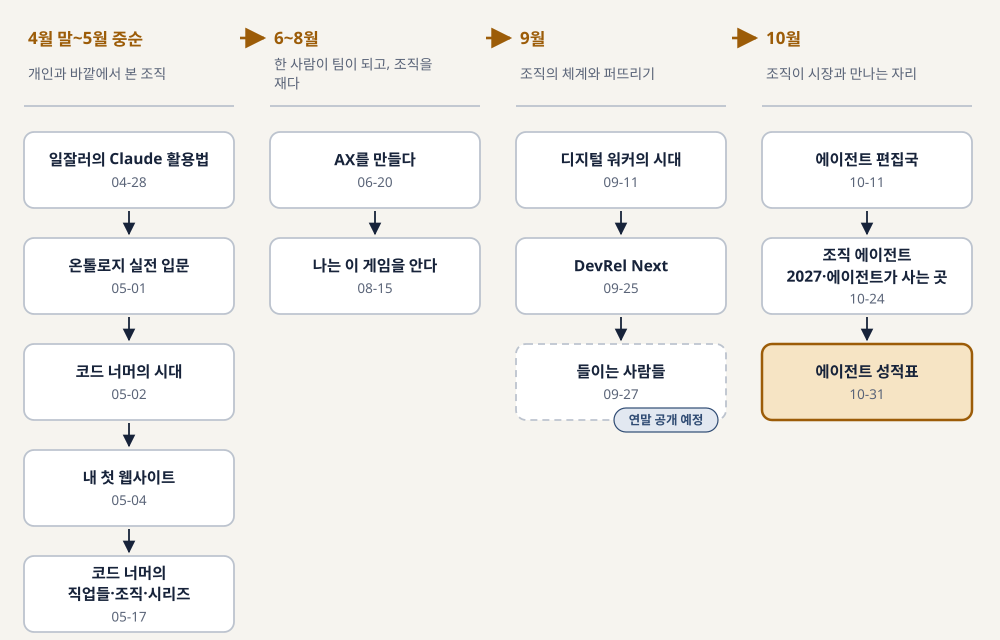
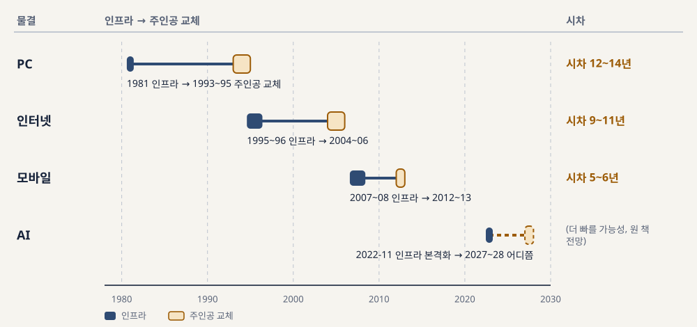
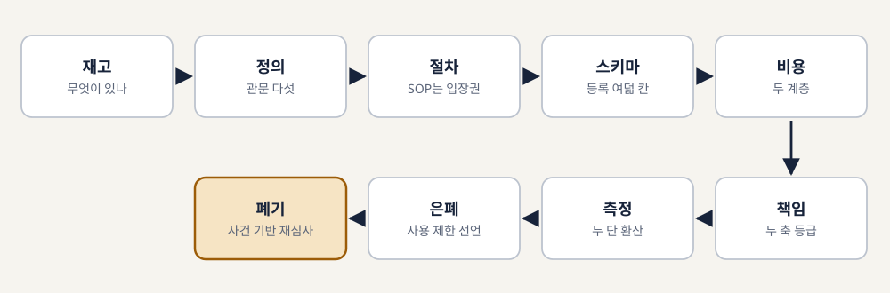
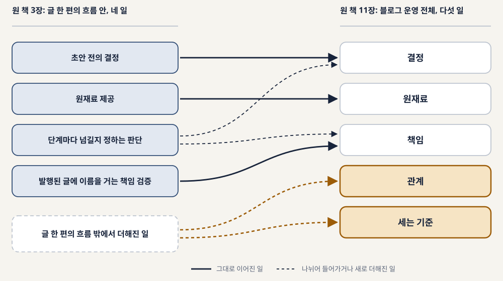
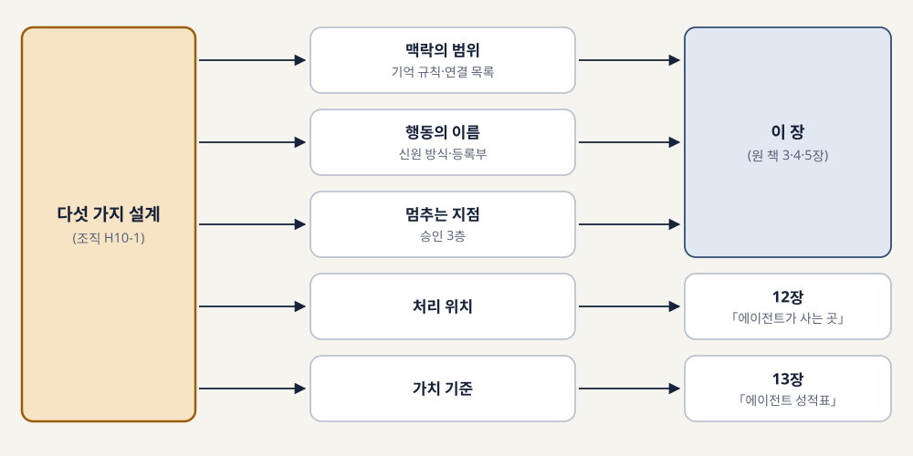
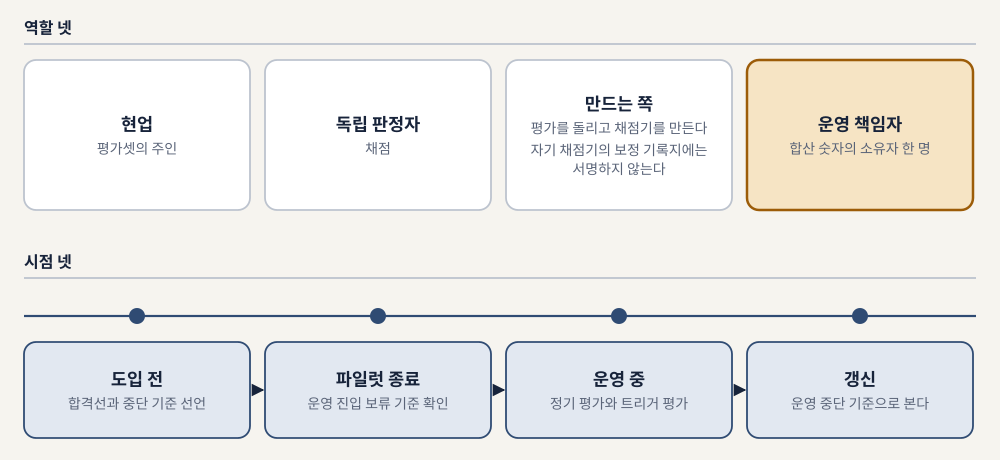
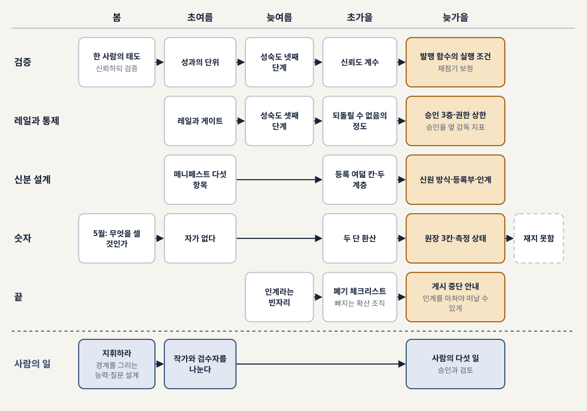

코드 너머에서
에이전트 성적표까지
열다섯 권으로 이어 읽는 2026년 AI 전환
"코드를 AI가 짜면, 그 다음은?"
「코드 너머의 시대」(2026년 5월)가 고쳐 쓴 질문
이 많은 책을 한 권으로 줄이면 무엇이 될까
2026년 4월 28일부터 10월 31일까지, 같은 저자의 이름으로 열다섯 권이 나왔다. 처음 세 주 동안에만 일곱 권이 쏟아졌다.
서문. 남긴 질문, 받은 책
요약을 모은 목록이 되기 쉽습니다. 독자는 열다섯 개의 결론을 얻지만, 그 결론들이 왜 그 순서로 나왔는지는 얻지 못합니다. 이 책은 앞 책이 끝에 남긴 문장과 뒤 책이 첫머리에서 받은 문장을 나란히 놓습니다.
질문은 개인에서 조직과 시장으로 커졌고, 여섯 흐름이 그 사이에서 방향을 틀었다
| 시기 | 물은 것 | 다루는 크기 |
|---|---|---|
| 봄 (4월 말~5월) | 코드를 AI가 짜면, 그다음은 | 개인, 그리고 바깥에서 본 조직 |
| 6~8월 | 안에서 만들고 재다 | 한 사람이 팀이 되고, 조직을 잰다 |
| 9월 | 거두고 퍼뜨리다 | 조직의 체계와 퍼뜨리기 |
| 10월 | 맡긴 뒤를 묻다 | 조직이 시장과 만나는 자리 |
여섯 흐름: 검증 · 레일 · 신분 · 숫자 · 끝 · 사람의 일. 봄의 책들에서 한두 문장으로 처음 나와 10월의 책들에서 표와 기준이 된다.
열다섯 권이 나온 순서
그림 0-1. 열다섯 권이 나온 순서와 다루는 크기(개인 → 팀 → 조직 → 조직과 시장)

연작은 계획이 아니었고, 어긋난 곳은 바뀐 순서대로 둔다
원 책이 앞 책을 직접 부르는 곳은 그 문장을 인용하고, 주제만 맞닿는 곳은 그렇다고 밝힌다. 이 책은 저자가 원고 전문을 검토하기 전의 초안 판본이다(v1.1.0, 2026-11-07).
코드를 AI가 짜면, 그다음은
2026년 봄, 3주 사이에 일곱 권이 나왔다. 질문은 한 사람에서 그 사람이 설 자리로, 다시 그 자리를 만드는 조직으로 옮겨 간다.
- 1장. 질문이 바뀌었다
- 2장. 처음 AI를 손에 쥔 사람들
- 3장. 인프라가 먼저 가고, 사람이 따라온다
- 4장. 공개 자료로 그린 조직
1년 만에 고쳐 쓴 질문
「코드만 잘 짜면 되는 거 아니야?」
→ 「코드를 AI가 짜면, 그 다음은?」
2025년 공저 『코드너머, 회사보다 오래 남을 개발자』(한빛미디어)의 질문을 2026년 5월의 책이 고쳐 썼다
2025년의 대답은 코드 바깥의 소프트 스킬이었습니다. 1년 뒤의 책은 1장 한 절의 제목을 「이전 책에서 물었던 질문, 그리고 달라진 대답」으로 답니다.
"현재 시점에서 AI는 후임자보다 조수에 가깝습니다."
Anthropic, Agentic Coding Trends Report(2026). 「코드 너머의 시대」가 인용. AI 모델을 파는 회사가 자기 제품의 쓰임을 정리한 자료라 이해관계가 있다.
AI가 가져간 것과 가져갈 수 없는 것
| AI가 가져가고 있는 것 | AI가 가져갈 수 없는 것 |
|---|---|
| 코드를 타이핑하는 일 자체 | 무엇을 만들어야 하는지 정하는 판단 |
| 이미 알려진 패턴을 반복해 적용하는 일 | 여러 시스템 사이의 맥락을 이해하는 일 |
| 정답이 분명한 기계적 작업 | "거의 맞지만 완전하지 않은" 것을 완전하게 만드는 감각 |
| 이전 코드를 복사해 조금 고치는 일 | 비즈니스 요구를 기술 설계로 옮기는 일, 공감과 윤리적 판단 |
「코드 너머의 시대」 3·4장. 방향은 한 문장으로: 「경쟁하지 마세요, 지휘하세요.」
세 실습서는 모두 끝에서 동료를 불렀다
| 「일잘러의 Claude 활용법」 | 「내 첫 웹사이트」 | 「온톨로지 실전 입문」 | |
|---|---|---|---|
| 첫 결과물 | 80점짜리 초안 | 이름이 적힌 포트폴리오 사이트 | 노드 다섯 개, 관계 열 개의 작은 그래프 |
| 검증 습관 | 팩트 체크 3습관 | 결과 확인 후 수정 요청, 에러를 읽고 보여 주고 검색 | 도메인 전문가 리뷰, 품질 관리 |
| 조직으로 넘어가는 지점 | 6개월차 팀 가이드, 노하우 전파 | 만든 것을 주변에 보여 주기 | 파일럿 → 확장 → 플랫폼화, 경영진 설득 |
원 책끼리 서로를 부르지는 않는다. 개인의 도구가 끝에서 조직의 일을 요구한 셈이라는 것은 이 책의 읽기다.
인프라가 먼저 가고, 사람이 따라온다

원 책의 정리로 PC 12~14년, 인터넷 9~11년, 모바일 5~6년. 모바일의 시차를 대면 AI 시대의 위대한 소프트웨어 회사는 2027~2028년 어디쯤이라고 본다.
"AX는 DX가 아닙니다. AX는 결과 중심의 재설계입니다."
| 구분 | DX | AX |
|---|---|---|
| 시작점 | 기술 (클라우드·데이터·보안) | 결과 (목표 KPI, 풀어야 할 문제) |
| 변환 단위 | 프로세스·시스템 | 워크플로·역할·조직 |
| 성공 지표 | 디지털 전환률 | 결과 도달 시간·결과당 비용·결과 신뢰도 |
| 시간 단위 | 분기·연 | 주·월 |
공개 자료와 외부 관찰만으로 쓴 책이라 현장의 1인칭 경험이 없다. 「Synergy를 약속하지 마시기 바랍니다」(7장 새로운 성과 관리).
안에서 만들고 재다
바깥에서 그린 지도 위로 한 사람이 걸어 들어갔다. 무엇을 먼저 깔았고, 무엇이 더 무거워졌는가. 그리고 조직은 지금 어디쯤인가.
- 5장. 한 사람이 팀이 되던 반년
- 6장. 우리 조직은 지금 어디쯤인가
생산은 십 분, 검증은 두 시간
「생산은 분명 십 분으로 줄었는데, 검증에 두 시간이 들기 시작한 것이다.」
「AX를 만들다」(2026-06-20) 8장
어설프게 틀린 것은 눈에 띄지만 정교하게 틀린 것은 더 깊이 파야 보입니다. 원 책의 결론 문장은 이렇습니다. 「AI 시대에 일을 잘한다는 건 더 많이 생산하기보다 더 잘 검증하는 것이다.」
한 사람이 지나온 다섯 구간

①환호 ②정체 ③신남 ④의구심 ⑤이륙. 원 책은 그 반년을 생산에서 검증으로의 전환과 레일로 묶었다.
신분증 다섯 줄, 그리고 가짜 신호와 진짜 신호
| 내용 | |
|---|---|
| 매니페스트 다섯 항목 | 소유자(없으면 들이지 않는다) · 용도 · 사용 모델·도구 · 위험등급 · 통과 게이트 |
| 가짜 신호 | 분량(코드 줄 수, 문서 건수), 토큰 사용량. 마음만 먹으면 AI로 얼마든지 부풀릴 수 있다 |
| 진짜 신호 | 되돌림률(며칠 못 가 갈아엎어진 비율), 주간 데모. 살아남으려면 실제로 맞아야 한다 |
「AX를 만들다」 1·5장. 레일과 에이전트의 신분, 성과를 세는 숫자라는 세 흐름이 여기서 처음 나온다.
여섯 영역, 다섯 단계, 서른 문항
| 영역 | 묻는 것 | 기존 모델이 비운 자리 |
|---|---|---|
| A 인식·동기·역량 | 배우는 수단과 쓰려는 이유가 있는가 | 대체로 갖춰져 있다 |
| B 기획·개발 | 할 일을 정의하고 만들 줄 아는가 | |
| C 연동·배포·운영 | 붙이고 올리고 굴리는 경로가 있는가. 맨 끝 C5는 인계 | 인계 표현 없음 (SEI) |
| D 평가·측정·개선 | 맞는지 재고 그 수치로 판단하는가 | 검증이 2단계에 놓임 (SEI) |
| I 자원·비용 (관통) | 계속 쓸 몫을 배분하는 규칙이 있는가 | 독립 역량영역 없음 (SEI) |
| J 보안·거버넌스 (관통) | 에이전트에 맞는 별도 보안 기준이 있는가 |
AXMM. 여정 4축과 관통 2축에 다섯 단계를 곱해 서른 문항, 문항마다 처방 하나. 원 책은 「앞 책에서 이걸 레일이라고 불렀다」고 앞 책을 직접 부른다.
두 개의 다섯, 그리고 재는 일이 게임이 되는 순간

거두고 퍼뜨리다
「AX팀을 만드는 순간, 당신의 조직은 AX에 실패한다」. 이 제목을 9월의 세 책은 각각 다르게 받았다.
- 7장. 현장에서 올라온 에이전트를 거두는 법
- 8장. DevRel을 했고, 지금은 AX를 한다
- 9장. 끝을 정해 두고 시작하는 확산 조직
지시하는 탑다운에서 거두는 탑다운으로
「AX팀을 만드는 순간, 당신의 조직은 AX에 실패한다」
→ 「이 책을 쓰는 사람이 가장 먼저 읽어야 할 문장이었다.」
GeekNews 토픽(2026-04-09)과 「디지털 워커의 시대」(2026-09-11) 서문
같은 책은 처음 구상을 고쳐 「탑다운이 해야 할 일은 지시가 아니라 거두는 체계다」라고 씁니다. 관문을 세우니 남은 후보 다수가 구성원 제안이었습니다.
아홉 개의 벽

재고 → 정의 → 절차 → 스키마 → 비용 → 책임 → 측정 → 은폐 → 폐기. 원 책은 막히는 순서를 그대로 목차로 삼았다.
성과 환산을 둘러싼 두 문장
| 6월 「AX를 만들다」가 비판한 것 | 9월 「디지털 워커의 시대」가 처방한 것 | |
|---|---|---|
| 대상 | 사람. AI를 써서 몇 명분을 했는지, 토큰을 얼마나 아꼈는지로 줄 세운다 | 에이전트. 그것이 한 일을 사람이 했다면 걸렸을 시간으로 환산한다 |
| 무엇을 재나 | 투입(토큰) | 산출(처리량)을 시간으로, 신뢰도·자율성 계수로 깎아서 |
| 원 책의 문장 | 「투입(input)을 손에 쥐고 사람을 줄 세우는 같은 게임」 | 「AI 사용량을 성과 지표로 삼지 않는다」 |
종합편의 정리. 원고에 바꾼 이유는 없고, 저자 확인으로 비판 대상과 처방 대상을 가렸다. 「절감이 곧 감원으로 읽히는 순간, 현장은 성과를 숨긴다」(9장).
"DevRel을 했고, 지금은 AX를 한다."
| 기능 | 회사 안에서 무엇이 되는가 |
|---|---|
| 번역 | 현업의 막힘을 플랫폼 팀이 우선순위를 매길 요구로, 기능 명세를 동료가 바로 쓸 예제로 옮긴다 |
| 피드백 루프 | 들은 것을 안에 전하고, 바뀐 것을 다시 알리고, 그 반응을 또 듣는 고리를 돌린다 |
| 신뢰 | 말보다 만든 결과물로 권한다. 가르친 흔적과 만든 흔적이 증빙이 된다 |
| 먼저 가보기 | 동료에게 권하기 전에 새 도구를 먼저 써 보고 넘어진다 |
「DevRel Next」 6·7장(셋째 열은 원 책 8장의 서술을 이 책이 정리). 원고끼리 이어지는 문장은 없다. 주제가 맞닿아 나란히 놓을 뿐이다. 효과에 대해 원 책은 「그 결론은 아직 이르다」고 멈췄다.
보이게, 고르게, 합치게
개인 도구로 두는 결정은 실패가 아니다. 「그렇게 빠지는 것까지가 잇는 일이다」. 「들이는 사람들」은 2026년 말 공개 예정인 원고라 열다섯 권에 세지 않고 내용만 짧게 소개했다. 고유명과 구체 사례는 싣지 않는다.
맡긴 뒤를 묻다
글의 값은 어디로 옮겨 가는가, 조직은 무엇을 맡기고 무엇을 지키는가, 모델은 어디서 누구의 권한으로 부르는가, 그리고 잘하는지와 값을 하는지는 누가 언제 가리는가.
- 10장. 초안이 싸진 뒤에 남는 것
- 11장. AI가 먼저 말을 걸 때 조직이 정할 것
- 12장. 어디서 돌리고, 누구의 권한으로 부르는가
- 13장. 잘하는지와 값을 하는지를 따로 재는 표
사람이 읽지 않은 글이 나간 날, 생긴 규칙 한 줄
「2026년 10월 4일, 발췌가 빈 소식을 골라 설정 파일과 API를 지어낸 글이 나온 뒤 생긴 규칙이다.」
「에이전트 편집국」(2026-10-11)
발행 전에 그 글을 읽은 사람은 없었습니다. 이 에이전트는 처음부터 사람의 승인 없이 발행하도록 짜여 있었습니다. 그 뒤 발췌가 너무 짧은 소식은 본문 주제로 고르지 못하게 떼어 냈습니다.
싸진 것과 값이 그대로인 것
| 블로그가 준 것 | 원 책의 판단 |
|---|---|
| 정보 정리·설명 | 싸진다. 누구나 몇 초 만에 초안을 만든다 |
| 사람이 확인했다는 보증 | 남는다. 드물어져 가치가 오를 수 있다 |
| 관점과 판단 | 남는다. 사람이 판단하고 책임질 일 |
| 독자와의 관계 | 남는다. 다만 측정 방식이 바뀐다 |
| 검색 트래픽 | 옮겨 간다. AI 요약과 AI 답변 쪽으로 |
| 채용·개발 문화 노출 | 남되, 증명 방식이 바뀐다(가설) |
「에이전트 편집국」 표 2-1을 줄임. 글을 내보낼 때 적을 세 가지: 누가 썼는가, 무엇을 했는가, 누구 책임으로 내보냈는가.
사람의 네 일에서 다섯 일로

다섯 일: 결정, 원재료, 책임, 관계, 세는 기준.
승인 3층: 무엇을 맡기고 무엇을 지키는가
| 층 | 가리는 질문 | 예 (2026년 10월 기준 공식 문서) |
|---|---|---|
| 자율 허용 | 틀려도 되돌릴 수 있고, 기록이 쌓이는가 | 읽기·요약·브리프·초안 |
| 실행 전 승인 | 되돌리기 어렵거나 조직 밖으로 나가는가 | 발송·결제·서명·삭제 |
| 승인해도 금지 | 사람이 승인해도 에이전트가 해서는 안 되는가 | 증권 거래·계좌 간 이체 |
원 책 5장 재구성, 가리는 질문은 종합편의 정리. 「승인을 받으라는 규칙이 프롬프트 한 줄에만 적혀 있으면, 모델이 그 줄을 놓친 순간 메일을 지켜 줄 장치가 남지 않는다.」
다섯 가지 설계

「이 책은 AX 3부작(「AX를 만들다」·「나는 이 게임을 안다」·「디지털 워커의 시대」)과 「들이는 사람들」, 「에이전트 편집국」의 다음 권이다.」
데이터·권한·경계 세 규칙
| 규칙 | 조직이 붙잡을 것 | 근거 강도 | 반대·한계 |
|---|---|---|---|
| 데이터 | 입력 등급 → 허용 위치, 출력 등급 상속, 결과를 볼 수 있는 사람 | 중 | 출력 등급 상속을 민간 정책 문서로 명문화한 사례는 찾지 못함 |
| 권한 | 에이전트 권한 = 연결한 사람의 권한 상속, 조직 IdP 연동 | 중 | 벤더 문서는 상속 기능의 존재만 입증 |
| 권한 | 권한을 승인하는 시스템, 위임 기록·감사 로그 위치 | 약 | 투자자 에세이·벤더 주장 중심, 시장 데이터 없음 |
| 경계 | 게이트웨이를 정책 집행점으로(키·예산·DLP·도구 인가·추적) | 중 | 단일 장애점이자 가장 값나가는 표적, 우회 경로 |
원 책 표 12-1을 줄임(여섯 줄 가운데 넷). 원 책의 사례는 설명용 가상 요청서 한 장이다. 「그 책은 2027년의 의제를 소개했고, 이 책은 그 의제를 회의에 들고 갈 표로 바꾼다.」
모델도 과제도 그대로, 바뀐 것은 검토와 재작업 시간
OpenAI 연구진이 자사 모델 네 종으로 계산한 같은 논문, 같은 표의 숫자(「에이전트 성적표」가 인용).
측정이 바뀌어 온 자리
| 책(달) | 세운 것 | 근거 수준 |
|---|---|---|
| 「코드 너머의 조직」(5월) | 활동량 지표를 의심하고 무엇을 셀지 물음 | 주제상 접점 |
| 「AX를 만들다」(6월) | 가짜 신호 대 진짜 신호, AI 몫 환산의 「자」가 없다 | 주제상 접점 |
| 「디지털 워커의 시대」(9월) | 두 단 환산(처리량→시간→FTE, 신뢰도·자율성 계수) | 원고 명시 |
| 「에이전트 편집국」(10월) | 운영 지표와 성과 지표 구분, 문체 게이트 문턱 0.6 | 원고 명시(11장) |
| 「조직 에이전트 2027」(10월) | 세 묶음 보고, 원장 3칸, 측정 미완료 | 원고 명시 |
| 「에이전트 성적표」(10월) | 행마다 측정 상태(잼·일부·재지 못함)와 미리 적은 합격선·중단 기준 | (종착점) |
「DevRel Next」(9월)의 사용량 옆 「만든 증거」는 7장 성과 지표 행과 주제상 접점.
누가 가리고 언제 가리는가

한 해 동안 확인한 것, 아직 재지 못한 것
13장의 성적표는 맨 아래 한 줄을 「재지 못함」으로 적어 둔 채 닫혔다. 그 규칙을 열다섯 권 전체에 대 본다.
- 검증과 레일
- 신분, 숫자, 끝
- 생각이 바뀐 자리
- 아직 재지 못한 것
- 사람은 무엇으로 남는가, 다시
여섯 흐름이 열다섯 권을 지나며 바뀐 자리
그림 14-1. 다섯 흐름과 사람의 일이 열다섯 권을 지나며 바뀐 자리
「검증」은 봄에는 한 사람의 마음가짐이었고, 가을에는 발행 함수가 읽는 기록이 되었다.

봄의 한두 문장이 10월의 표와 기준이 되었다
생각이 바뀐 자리
| 주제 | 처음 | 나중 | 아직 열린 것 |
|---|---|---|---|
| 성과 환산(FTE) | 「AX를 만들다」(6월): 사람을 전일제 환산·토큰 가성비로 줄 세우는 평가를 경고 | 「디지털 워커의 시대」(9월): 에이전트 산출의 두 단 환산과 두 계수 | FTE가 감원으로 읽힐 위험, 자율 에이전트 생산성 실증 없음 |
| AX팀 | 「디지털 워커의 시대」 서문(9월 초): AX팀을 만드는 책이 아님 | 「들이는 사람들」(9월 말): 끝을 헌장에 적고 스스로 빠지는 확산 조직 | 실제로 물러나는 순간에 대해 「아직 충분한 답을 갖고 있지 않다」 |
| 통제 기준 | 「AX를 만들다」(6월): 위험등급 단일 값과 게이트 | 9월 되돌릴 수 없음의 정도 → 10월 승인 3층 | 승인 3층에 넣은 실제 사례가 아직 부족 |
| 권한 원칙 | 「조직 에이전트 2027」: 만든 사람의 권한과 「1:1로 미러링」 | 「에이전트가 사는 곳」(같은 주): 권한을 「넘지 않게」 | 권한을 승인하는 시스템의 시장 데이터 없음 |
원 표는 여섯 줄. 바꾼 이유는 원고에 있는 만큼만 적고, 없으면 없다고 적었다.
자가 나왔지만, 그 자로 잰 결과는 아직 없다
「아직 아무도 이 자를 만들지 못했기 때문이다.」(6월)
「등록된 자율 에이전트의 생산성을 측정한 실증도 확보하지 못했다.」(9월)
「성적표를 쓰는 조직의 성과가 오른다는 근거도 아직 없다.」(10월 말)
「AX를 만들다」 · 「디지털 워커의 시대」 · 「에이전트 성적표」
공백 자체는 그대로입니다. 그 사이에 공백을 재는 방법이 생겼습니다. 재지 못한 것을 재지 못했다고 적는 양식, 결과를 보기 전에 적는 합격선, 숫자마다 붙이는 두 라벨입니다.
2027년 말 점검 예약
| 가설 카드 | 가릴 조건 |
|---|---|
| 조직 H10-2. 사람은 승인·검토하는 업무의 비중이 엄청 높아진다 | 대상 업무 흐름에서 승인·검토 시간의 비중이 기준 분기보다 늘지 않으면 버린다. 검토가 예외 지점에 모이고 품질이 유지됐다면 범위를 좁힌다 |
| 성적표 E8-1. 권한 승인이 건별 승인에서 사전 허용 범위와 사후 표본 검토로 옮겨 간다 | 주요 제품 관리자 문서에 그 기능이 생겼는지, 그 방식의 사용 비중이 늘었다는 자료가 있는지 |
| 성적표 E7-1. 기업 내부 에이전트를 성과 지표와 연결한 공개 무작위·준실험 연구가 나온다 | 2027년 말까지 그런 연구가 공개됐는지. 나오면 두 라벨부터 붙인다 |
| 편집국 H11-1. 초안 비용이 0에 가까워지면 가치는 결정·원재료·책임·관계로 옮겨 간다 | 대량 생성만 한 블로그가 인용·행동·관계 지표에서 꾸준히 앞서면 버린다 |
원 표는 일곱 장. 가리는 선택지는 넷(받아들임·범위 축소·보류·버림). 「거의 모든 줄이 보류로 끝나면 1년을 보냈는데 무엇이 맞고 틀렸는지 말할 수 없게 된다.」(「조직 에이전트 2027」)
같은 해, 같은 저자의 책에 나란히 있는 두 문장
「AI가 일하고, 사람은 승인하고 검토하는 업무의 비중이 엄청 높아질 것 같다.」
vs. 권한 요청의 약 93%가 승인되었고, 승인을 많이 볼수록 감독이 느슨해졌다
「조직 에이전트 2027」 저자의 가설 · 「에이전트 성적표」가 인용한 Anthropic 공식 글
이 책은 둘 가운데 하나를 고르지 않습니다. 원 책들도 고르지 않았습니다. 앞의 것은 2027년 말에 채점할 카드로, 뒤의 것은 승인율 옆에 둘 감독 지표로 바꿨습니다. 결론을 미리 정하는 대신 가릴 기록을 정해 둔 것입니다.
결과를 들여다보는 한 사람의 자리에서, 무엇을 들여다볼지 미리 적어 두는 조직의 자리로
「코드가 사라진 자리에, 사람이 남습니다」
「코드 너머의 시대」 마지막 쪽
그 문장이 맞는지는 문장만으로 알 수 없고, 반복 작업 하나를 AI에게 맡기고 그 결과를 들여다보는 자리에서 확인할 수밖에 없습니다. 열다섯 권이 지나는 동안 그 자리는 조금씩 넓어졌습니다. 승인하는 사람이 무엇을 확인했고 무엇을 아직 확인하지 않았는지를 지면에 적는 일도 이 해의 책들이 사람의 일로 꼽은 것입니다.
지금 막힌 문제가 펼칠 책을 정한다
| 지금 막힌 문제 | 펼칠 책 |
|---|---|
| 도구는 나눠 줬는데 개인이 어떻게 써야 할지 모른다 | 「일잘러의 Claude 활용법」·「내 첫 웹사이트」·「온톨로지 실전 입문」 |
| 우리 조직이 지금 어디쯤인지 모른다 | 「나는 이 게임을 안다」 |
| 현장 에이전트를 등록하고 내려놓을 기준이 없다 | 「디지털 워커의 시대」 |
| 사내에 퍼뜨리는 일을 누가 어떻게 할지 모른다 | 「DevRel Next」 8~9장 (「들이는 사람들」은 2026년 말 공개 예정) |
| AI 산출물을 내보낸 뒤 누가 책임지는지 모른다 | 「에이전트 편집국」 |
| 에이전트의 권한과 승인을 정해야 한다 / 모델 배치와 재계약 | 「조직 에이전트 2027」 4·5장 / 「에이전트가 사는 곳」 |
| 잘하는지, 값을 하는지 보고해야 한다 | 「에이전트 성적표」 |
실천 한 가지: 표 14-2의 카드 하나를 골라 2027년 말 회의 안건에 미리 올려 두자. 기준은 "우리 조직의 기록으로 가릴 수 있는가". H10-2라면 이번 달 한 업무 흐름의 승인·검토 시간과 전체 작업 시간이 첫 기록이다.
코드 너머에서
에이전트 성적표까지
웹 · EPUB · 발표자료: ksangki.github.io/beyond-code-to-scorecard
"할 수 있어서 하는 대신, 꼭 필요해서 하는 것." (「AX를 만들다」 에필로그)